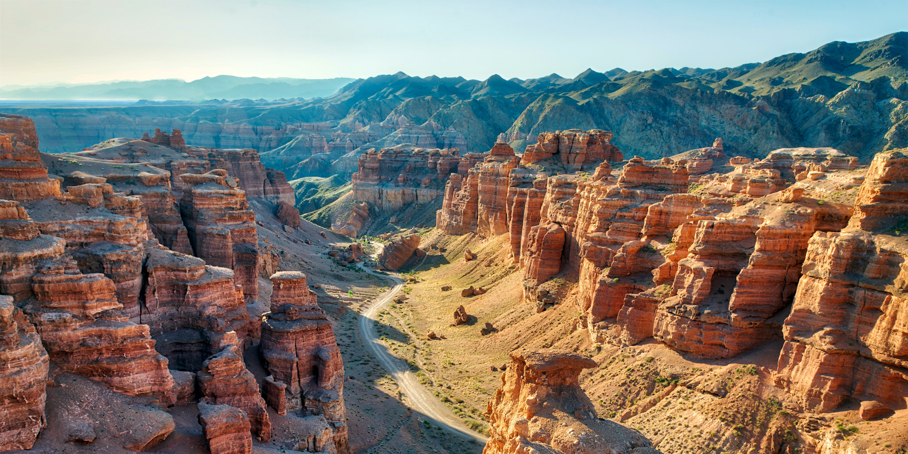

Almaty, aka the city of apples is the largest city in Kazakhstan and a must-see on any Kazakstan itinerary. Surrounded by stunning scenery and nature, the city’s fascinating architecture and delicious food scene are great reasons to travel to Almaty. Almaty is still the major commercial, financial, and cultural centre of Kazakhstan, as well as its most populous and most cosmopolitan city.[7] The city is located in the mountainous area of southern Kazakhstan near the border with Kyrgyzstan in the foothills of the Trans-Ili Alatau at an elevation of 700–900 m (2,300–3,000 feet), where the Large and Small Almatinka rivers run into the plain.[8] The city, just like Astana and Shymkent, does not belong to any region and is officially a "city of state importance"
Almaty wheather Almaty on a map
Destroyed by the Mongols in the 13th century, the modern city of Almaty, (formerly Alma-Ata) was founded in 1854 when the Russian military built a fortification on the site of the ancient city. The city is located in the southeast of Kazakhstan, bordering Kyrgyzstan and China. With a population of nearly 1.8 million people, it’s the country’s largest city. It served as the country's capital until 1997 and remains Kazakhstan's trading and cultural hub.
Russian is the main language spoken in Almaty. A small part of the city’s population also speaks Kazakh (a Turkic language).
